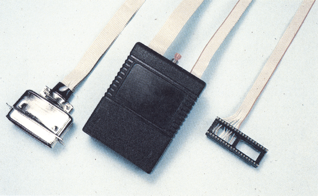

Formel C für den C 128
Floppy-Speeder, Maschinensprache-Monitor, Grafik- und Toolkit-Befehle – dies alles bietet Ihnen Formel C in einem einzigen Steckmodul.
Viele Erweiterungen für den C 128 im C 64-Modus sind in ihren Leistungen mehr oder weniger beschränkt, da sie nur auf einen bestimmten Anwendungsbereich zugeschnitten sind. Hier bietet »Formel C« (Bild 1) eine reizvolle Alternative.

Beim Arbeiten im C 64-Modus ist es immer von Vorteil, verschiedene Toolkit-Funktionen wie zum Beispiel AUTO, RENUMBER, FIND oder OLD zur Verfügung zu haben. Formel C ist aber wesentlich mehr als nur eine Befehlserweiterung für den C 64-Modus. Denn hier wurden außer Toolkit-Funktionen (siehe Tabelle) zur Unterstützung der Programmierung noch ein Maschinensprache-Monitor, ein Disketten-Monitor, ein komfortabler 2-Pass-Assembler und einige schnelle Grafik-Befehle eingebaut. Erwähnenswert ist der im Modul integrierte Floppy-Beschleuniger, der allerdings nur mit dem Diskettenlaufwerk 1541 zusammenarbeitet. Möchte man dieses Modul in einen C 128D einbauen, ist das interne Laufwerk 1571 abzuschalten und eine 1541 extern anzuschließen. Dafür sind dann aber auch die Geschwindigkeiten bei LOAD, SAVE und VERIFY etwa 16mal schneller als bei einer nicht umgerüsteten 1541. Und das in allen drei Modi (C 64, C 128 und CP/M). Ein Backup- und Filecopy-Programm sowie eine gegen Aufpreis erhältliche Centronics-Schnittstelle runden das Bild von Formel C angenehm ab.
Die für diese Funktionen benötigte Software ist in einem 16-KByte- und einem 32-KByte-EPROM untergebracht, zwischen denen ständig hin- und hergeschaltet wird.
Folgende Funktionen können durch Druck auf bestimmte Tasten beim Einschalten erzielt werden:
Keine Taste: Der Computer verhält sich so, als ob kein Modul eingesteckt wäre.
<CTRL>: Der Computer springt in den C 64-Modus. Mit dem Befehl OFF kann nun der normale C 64-Modus ohne Formel C-Unterstützung gewählt werden.
<←>: Eine eingelegte CP/M-Diskette bootet mit erhöhter Geschwindigkeit (5fach). Nach Abschluß des Bootens führt das Diskettenlaufwerk CP/M-Operationen mit 15facher Geschwindigkeit aus.
Besonderheiten im CP/M-Modus:
— Der Befehl BOOT führt in jedem Fall zum Laden des CP/M-Systems mit normaler Geschwindigkeit. Das beschleunigte Arbeiten ist nur durch einen Reset mit gedrückter <CTRL>-Taste zu erreichen.
— Im CP/M-Modus steht eine schnelle Formatier-Routine zur Verfügung.
— Komplette CP/M-Disketten können im C 64-Modus mit dem Befehl BACKUP in kurzer Zeit kopiert werden.
— Mit einem zweiten Floppy-Kabel lassen sich zwei Laufwerke unter CP/M betreiben.
Floppy-Beschleuniger eingebaut
Der Floppy-Beschleuniger ist an einem Kabel erkennbar, das aus dem Modul herausgeführt ist. Der Adaptersockel ist in das Laufwerk einzubauen. Dort muß lediglich ein Chip auf der Platine herausgezogen und der Sockel eingesetzt werden. Weitere Umbauarbeiten gibt es nicht. Die Lade- und Speichergeschwindigkeit steigt damit um den Faktor 6 bis 8. Verwendet man aber speziell formatierte Disketten, läßt sich diese Geschwindigkeit auf das 13- bis 16fache steigern.
Hier nun die Leistungen in einer tabellarischen Übersicht:
| Floppyfunktionen | |
|---|---|
| LOAD | in allen drei Modi 16mal schneller |
| SAVE | |
| VERIFY | |
| Formatieren | etwa 18 Sekunden |
| Backup | etwa 80 Sekunden |
| DOS-Befehle (C 64-Modus) | |
| DLOAD | Diskettenbezogene Befehle |
| DVERIFY | |
| DSAVE | |
| DAPPEND | |
| DIR | Anzeige des Disketten-Directories ohne Programmverlust |
| LRUN | Laden und Starten eines Programms |
| REPLACE | Korrigiertes Überschreiben eines Programms auf Diskette |
| STATUS | Anzeige des Laufwerks-Status |
| HEADER | Formatieren |
| BACKUP | Kopieren einer ganzen Diskette |
| SEND | Befehle an Laufwerk senden |
| FILECOPY | Kopieren einzelner Dateien |
| Toolkit-Funktionen (C 64-Modus) | |
| AUTO | Automatische Zeilennummern-Vorgabe |
| RENUMBER | Umnumerierung eines Basic-Programms |
| DELETE | Löschen von Programm-Teilbereichen |
| DEZ | Umrechnung verschiedener Zahlensysteme |
| HEX | |
| FIND | Findet Zeichenketten oder Befehle |
| JUMP | Führt Maschinenprogramme aus |
| OLD | Retten eines gelöschten Programms |
| RESET | Reset mit Modul-Neustart |
| LPRINT | Ausgabe auf Drucker |
| LLIST | |
| HARDCOPY | über volle DIN-A4-Breite |
| HELP | Übersicht über die neuen Befehle |
| OFF | Reset ohne Modul-Neustart |
| TKITOFF | Abschalten der Befehlserweiterung |
| Maschinensprache-Monitor | |
| Ilegale Opcodes | |
| Memory-Dump | Hex oder ASCII |
| Disassemble | Disassemblieren |
| Assemble | Assemblieren |
| Register | Anzeige der Prozessor-Register |
| Single-Step | Schrittweises Abarbeiten von Assembler-Programmen |
| Goto | Startet ein Maschinenprogramm |
| Exit | Führt zurück ins Basic |
| Printer on | Leitet Ausgaben auf Drucker |
| Printer off | Schaltet zurück auf Bildschirm |
| Find | Findet Befehle |
| Fill | Füllt Speicherbereich mit bestimmtem Wert |
| Hunt | Findet Bitkombinationen |
| Breakpoint | Setzt Abbruchbedingung bei Step |
| Quickstep | Ähnlich Single-Step |
| Transfer | Verschiebt Speicherbereiche |
| Compare | Vergleicht Speicherbereiche |
| Load | Lädt ein Maschinenprogramm |
| Save | Speichert ein Maschinenprogramm |
| Disk-Monitor | Mit Read-Write-Sektor |
| 2-Pass-Assembler | |
| Befehlskompatibel zu Profi-Ass | |
| Zusätzliche Label-Tabelle beliebig verschiebbar | |
| Verarbeitung illegaler Opcodes | |
| Grafik | |
| HIRES | Schaltet hochauflösende Grafik ein |
| MULTI | Schaltet Mehrfarben-Grafik ein |
| FRAME | Setzt die Rahmenfarbe |
| CLEAR | Löscht den Grafikbildschirm |
| TEXT | Umschalten auf Text-Modus |
| PAGE | Umschalten verschiedener Grafikseiten |
| COPY | Kopiert Bildschirme |
| MIX | Mischt Grafikbilder |
| INVERT | Invertieren der Grafik |
| GSAVE | Speichert Grafikbilder |
| GLOAD | Lädt Grafikbilder |
| PLOT | Setzt einen Grafikpunkt |
| LINE | Zieht eine Linie |
| DRAW | Zeichnen unregelmäßiger Linien |
| BOX | Zeichnet ein Rechteck |
| BLOCK | Zeichnet ein ausgefülltes Rechteck |
| CIRCLE | Erstellt einen Kreis |
| FILL | Füllt eine Fläche aus |
| HPRINT | Schreiben von Text in den Grafikbildschirm |
| VPRINT | |
Diese speziell formatierten Disketten können aber auch ohne Modul gelesen werden. Auch der Formatierungsvorgang selbst hat sich bezüglich der Geschwindigkeit verbessert. Gegenüber 70 Sekunden beim Original-Betriebssystem ist eine Diskette nun in etwa 18 Sekunden formatiert. Kritische Programme wie Textomat plus oder Summer Games II liefen einwandfrei.
Formel C hat für Basic- oder Maschinensprache-Programmierer im C 64-Modus einiges zu bieten. Es existieren Befehle wie RENUMBER zum Umnumerieren von Basic-Programmen genauso wie FIND, um einzelne Zeichenfolgen zu suchen. HCOPY erzeugt eine Hardcopy des Bildschirms, egal, ob vom Text- oder Grafikbild. Allerdings nur auf einem Epson-kompatiblen Drucker. Die Hardcopy wird über das gesamte Querformat einer DIN-A4-Seite gedruckt. Des weiteren gibt es Kommandos wie LLIST oder LPRINT zum einfachen Ansteuern eines Druckers. Der Befehl DELETE löscht ganze Bereiche eines Programms. Abgerundet werden diese Toolkit-Funktionen durch Befehle wie OLD, HELP, HEX und DEZ.
Für Assemblerfreaks ist ein komfortabler Monitor mit integriertem Diskmonitor eingebaut. Vorhanden sind Befehle wie MEMORY, ASSEMBLE, DISASSEMBLE, FIND und VERIFY. Interessant ist der vorhandene Einzelschrittmodus, der es erlaubt, den Ablauf von Maschinenroutinen genau zu beobachten. Außergewöhnlich ist die Unterstützung von illegalen Opcodes des 8502-Prozessors.
Der Diskmonitor erlaubt umfangreiche Operationen im Laufwerk-RAM und Manipulationen einzelner Blocks auf der Diskette. Der vorhandene Assembler ist befehlskompatibel zum Profi-Ass. Es wurden allerdings einige zusätzliche Befehle mit aufgenommen. So verarbeitet er ebenfalls illegale Opcodes.
Grafik
Die eingebauten Grafikbefehle für den C 64-Modus überzeugen durch ihre Schnelligkeit und Leistungsfähigkeit. Es werden bis zu vier Grafikseiten verwaltet, bei denen die Möglichkeit besteht, diese untereinander frei zu kopieren und zu mischen. Die erste Grafikseite liegt im RAM unter dem Basic-Interpreter. Alle weiteren Grafikseiten verbrauchen, insofern sie benötigt werden, Basic-Speicherplatz. Grafikfunktionen sind reichlich vorhanden. So existieren Befehle wie CIRCLE und BOX zum Zeichnen von Ellipsen, Kreisen oder Vierecken, LINE zum Ziehen von Linien und DRAW zum Entwerfen komplexer Gebilde. Text kann sowohl horizontal wie auch vertikal in eine Grafik eingebaut werden. PLOT setzt oder löscht einzelne Punkte. Mit GSAVE und GLOAD ist das Speichern und Laden einzelner Grafikseiten möglich, wobei dann beim Laden sofort auf hochauflösende Grafik geschaltet wird.
Centronics-Schnittstelle optional
Gegen einen Aufpreis von 49 Mark erhält man eine Centronics-Schnittstelle, mit der man einen beliebigen Centronics-Drucker anschließen kann. Über die Sekundäradresse können dabei verschiedene Modi wie Listingdruck, Linearkanal und Textdruck eingestellt werden. Formel C erkennt automatisch, an welchem Bus ein Drucker angeschlossen ist. Entsprechend wird dann dieser Drucker angesteuert. Die automatische Erkennung ist auch abschaltbar.
Natürlich wurden bei all diesen Erweiterungen einige Diskettenbefehle nicht vergessen. So läßt sich mit DIR ein Directory von einer Diskette lesen, der Disketten-Status abfragen und auch DOS-Befehle können gesendet werden. Außergewöhnlich sind die Funktionen, die über die <RESTORE>-Taste erreichbar sind. Es läßt sich damit jederzeit eine Hardcopy des Bildschirmes starten, häufig auch innerhalb laufender Programme oder Spiele. Weiterhin eingebaut ist eine BACKUP-Routine, die eine vollständige Kopie einer Diskette in 80 Sekunden erstellt. Auch einzelne Dateien und Programme lassen sich mit FILECOPY kopieren.
Fazit
Formel C ist eine gelungene Erweiterung für den C 128. Speziell für den C 64-Modus sind sehr viele gute Erweiterungen in einem Gehäuse zusammengefaßt. Außerdem erhöht das Modul die Datenübertragungsgeschwindigkeit von und zum Diskettenlaufwerk. Leider kann es nur mit der Diskettenstation 1541 betrieben werden. Für den Preis von 198 Mark ist es aber auf jeden Fall eine Erweiterung, die sehr viele und umfassende Funktionen in einem Modul beinhaltet und jedermann empfohlen werden kann, der oft im C 64-Modus arbeitet und häufig benötigte Erweiterungen sucht.
(dm)Info: Grewe Computertechnik, Wiesenstr. 82, 4350 Recklinghausen, Tel. 02361/181354